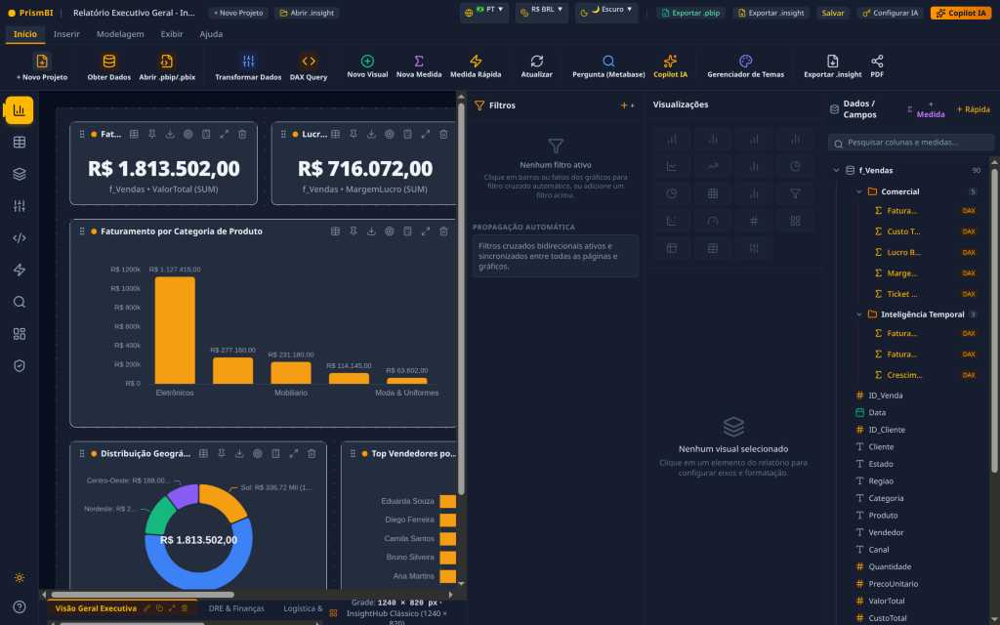
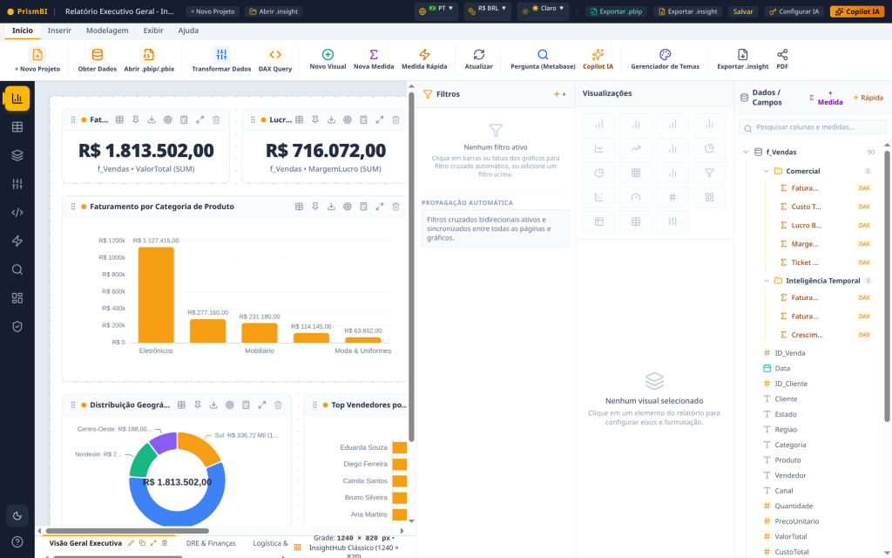
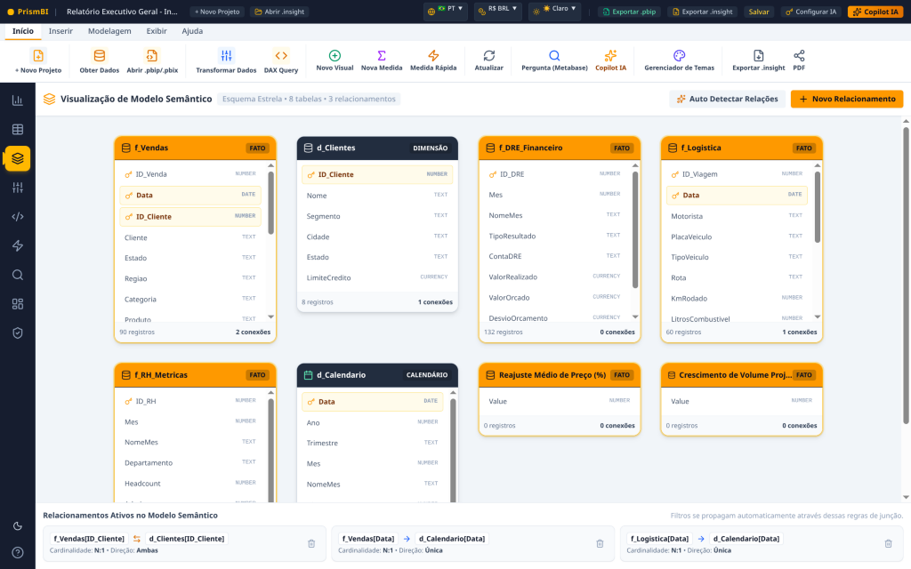

Alternativa open-source ao Power BI para Linux e Windows
PrismBI é um app de BI nativo e gratuito. Ele abre seus projetos
.pbip / .pbix do Power BI e os executa com
um motor DAX em Rust e DuckDB embutido — sem máquina virtual Windows
e sem tenant na nuvem.
Gratuito e open source. AppImage / .deb / .rpm / AUR para Linux, MSI / ZIP portátil para Windows x64.
Veja em funcionamento
Capturas de tela reais do app — canvas de relatório, visão do modelo semântico e o console de consultas DAX.




Recursos
Direto do README do projeto — nada aqui é especulativo.
Abre .pbip e .pbix
Importação nativa em Rust de pastas .pbip (modelo semântico TMDL + relatório PBIR) e arquivos .pbix, incluindo DataModelSchema e o mashup de Power Query (M).
Motor DAX nativo em Rust
Motor tipado em Rust com mais de 165 funções DAX, com conformidade medida em 364/368 (98,9%) em um corpus verificado de forma independente e checado em cada build de CI.
DuckDB embutido
Ingestão nativa e rápida de Excel, CSV, Parquet, JSON e fontes REST API, além de conectores para PostgreSQL, MySQL/MariaDB, SQLite e Parquet particionado — sem gateway externo.
Editor visual de Power Query
Painel de consultas no estilo Power BI com ~80 operações, etapas aplicadas editáveis, barra de fórmulas e Editor Avançado. O M é realmente interpretado e gerado, com round-trip na importação/exportação de .pbip.
Visuais interativos
Cartões/KPIs, gráficos de coluna/barra/linha/área/combinado/treemap/dispersão/gauge (Apache ECharts), pizza/rosca, funil e cascata no estilo Power BI, matrizes, tabelas e segmentações.
Atualizações automáticas assinadas
O atualizador interno só instala pacotes cujo SHA256SUMS.txt tenha assinatura Ed25519 válida, com URLs de download restritas às releases deste repositório.
Download
Pacotes prontos para Linux e Windows x64. Todos os artefatos são publicados junto com um SHA256SUMS.txt assinado.
Instale pela AUR com seu helper favorito:
yay -S prismbi-bin
# ou
paru -S prismbi-binPerguntas frequentes
O PrismBI abre arquivos .pbix?
Sim. O PrismBI lê nativamente arquivos .pbix (DataModelSchema, Report/Layout em UTF-16LE e o DataMashup multi-query) e também pastas .pbip (modelo semântico TMDL + relatório PBIR), com exportação round-trip preservando scripts Power Query (M) e a maior parte das configurações visuais/tema. Veja a Matriz de Compatibilidade para a cobertura exata.
O PrismBI é afiliado à Microsoft ou ao Power BI?
Não. O PrismBI é um projeto independente da comunidade e não é afiliado, endossado ou patrocinado pela Microsoft Corporation. Power BI é uma marca registrada da Microsoft Corporation, usada aqui apenas para descrever compatibilidade de formato de arquivo.
Funciona offline, sem conta ou tenant Microsoft?
Sim. O PrismBI é um app desktop nativo (Tauri v2 + Rust + DuckDB). Ele lê arquivos locais e se conecta diretamente a bancos de dados que você configurar — não exige um tenant do Microsoft 365, um workspace online, nem conexão com a internet para abrir e analisar um modelo.
O PrismBI é gratuito?
Sim. O PrismBI é gratuito e open source, distribuído sob a The Mutualist License v1.3. O código-fonte é público no GitHub.
Quais plataformas são suportadas?
Linux (AppImage, .deb, .rpm e um pacote AUR para Arch) e Windows x64 (instalador MSI ou ZIP portátil), na versão v0.9.1.
O PrismBI é um projeto independente, não afiliado nem endossado pela Microsoft. Power BI é uma marca registrada da Microsoft Corporation. "PrismBI" e seu logotipo são usados aqui apenas para identificar este projeto open-source.